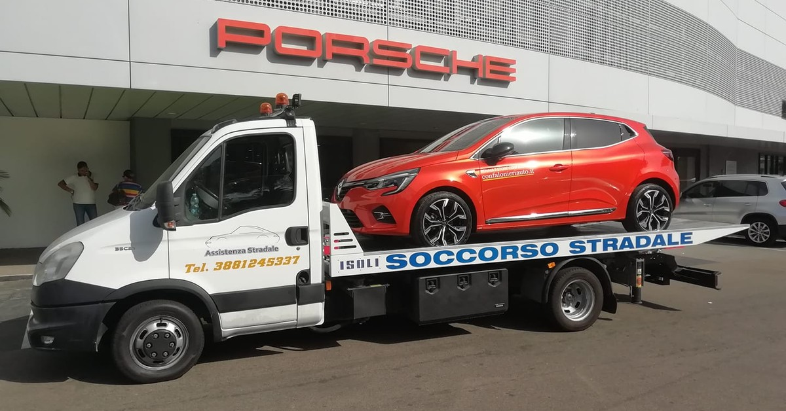

Pronto Intervento Stradale Giorno e Notte
Pronto intervento stradale a Sassari. Non restare fermo in strada: il nostro team di professionisti ti raggiunge ovunque tu sia nella provincia di Sassari, 24 ore su 24.
328 351 9098 Gratuito e senza impegno
Descrivici il problema e la tua posizione
Il mezzo piu vicino parte immediatamente
Riparazione sul posto o trasporto sicuro
Team sempre pronto per raggiungerti in qualsiasi punto della provincia di Sassari
Molti guasti si risolvono senza officina. Portiamo gli strumenti necessari da te
Carro attrezzi con pianale per trasportare il tuo veicolo senza rischio di danni
Ti aiutiamo con la documentazione per il rimborso dalla tua compagnia assicurativa
Raggiungiamo qualsiasi punto della provincia rapidamente
Preventivo chiaro e trasparente prima di ogni intervento
Oltre 15 anni di soccorso stradale professionale
Notte, weekend, festivi: ci siamo sempre
"Servizio impeccabile alle 2 di notte. Gentili e professionali. Li richiamero sicuramente."
"Bloccata a Stintino in piena estate. Arrivati comunque in tempi ragionevoli. Bravi!"
"Anche dalla Gallura arrivano rapidi. Ottimo servizio, prezzi giusti."
Copriamo Sassari e tutta la provincia con tempi di intervento rapidi.
Risposta garantita in meno di 30 secondi
328 351 9098